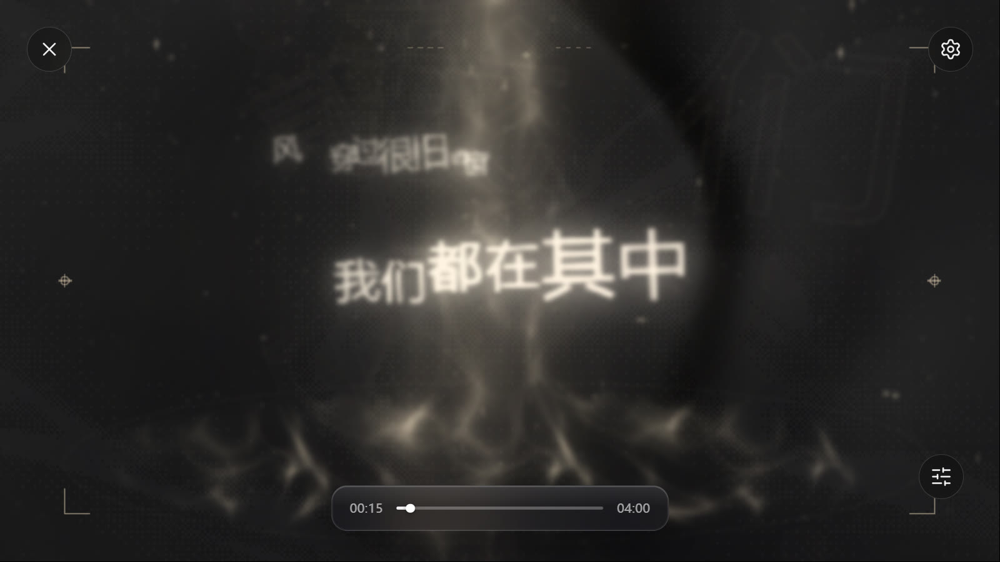
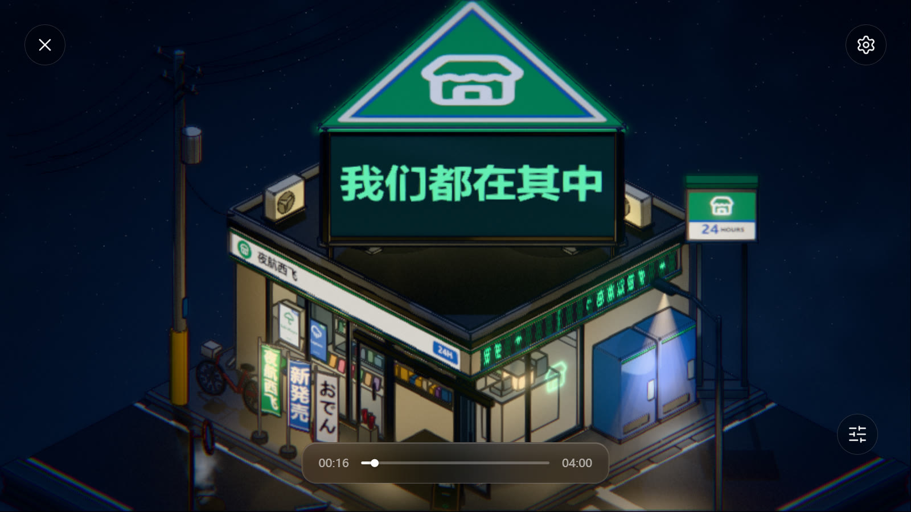
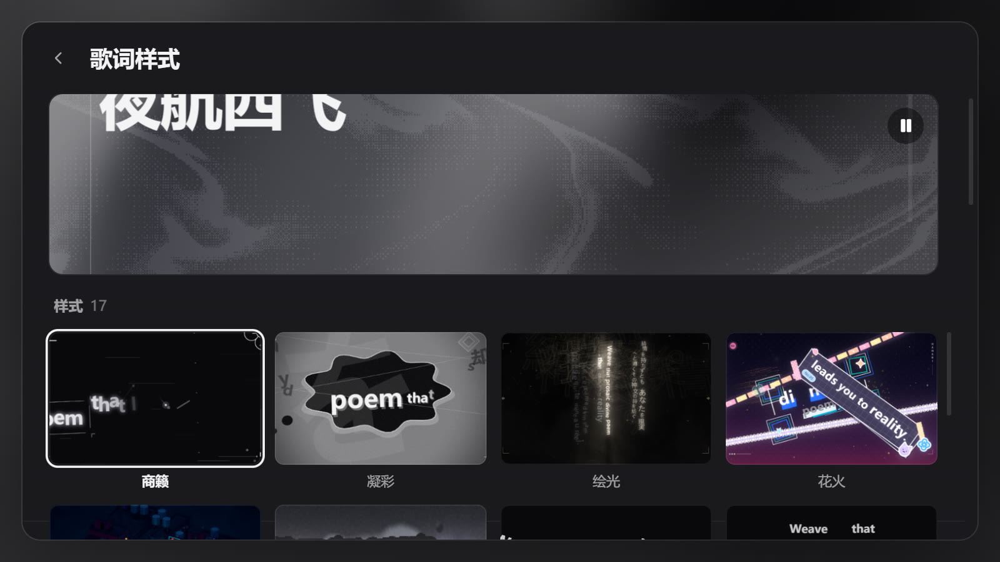

底部播放条
播放 / 暂停、上一首 / 下一首、拖动进度、随机 / 循环，还有一个播放队列面板可以点选切歌。全部按钮都可用键盘聚焦。
Salt Player for Windows · 歌词可视化插件
不是照着 Folia 画出来的仿制动效 —— 插件把上游 Folia 的真实渲染器整套打包进来， 交给原生 WebView2 宿主实时绘制。17 种样式逐字发光，跟着播放器正在放的那首歌走； 也可以只把歌词留在桌面上。
01真身
插件内嵌上游 Folia 0.7.25 的 web 产物：转场、辉光、逐字时间轴、动态背景， 全都是 Folia 自己的渲染器在画。宿主进程只做一件事之外的杂活 —— 开窗口、合成透明、 采样音频、搬运播放状态。
所以这里没有「复刻得像不像」的问题：同一份渲染代码，画面就是同一个。
每个字有自己的入场时序与辉光，跟着音节亮起来；翻译字幕、播放 / 暂停 / 跳转 / 倍速都与播放器同步。
主题、背景与强调色由当前歌曲封面派生，切歌即变；深浅色主题各自成一套。
音频经 WASAPI 回环采样后送进渲染器，所以起伏来自真实的声波，不是随机数。
02十七种气质
从安静的排版到流动的光。每一种都是 Folia 的原版效果。勾选几种组成随机池后， 每首歌换一种且不连续重复；播放面板上的骰子按钮还能当场重抽。
每一格就是「歌词样式」货架里的那张小图本身 —— 由发行版渲染器绘制，不是另做的示意图。 具体配色跟随当前歌曲封面与深浅色主题，所以同一款式换一首歌会换一种天色。
点击任意一格放大 ←→切换 Esc关闭
03手上的控制
播放页不是一张只能看的海报。底部播放条接着真实播放器，画面本身也是一块可以点的控制面。
点完立刻生效，没有「先开设置再找开关」这一步：右下角圆钮点开就是那一小片面板。

播放 / 暂停、上一首 / 下一首、拖动进度、随机 / 循环，还有一个播放队列面板可以点选切歌。全部按钮都可用键盘聚焦。
横向三段透明点击区：中间播放 / 暂停，左侧上一首，右侧下一首。它铺在所有控件下面，不抢播放条和圆钮的点击；按下后移动超过约 10 像素算拖动，不触发。
「町景」整个画面是一个可以转动的三维场景，按住拖动就能换个角度。最新版 起，拖动旋转和点击分区不再互相打架：拖就是拖，点就是点。
右下角菜单里有一行「显示播放条」。关掉后播放条连点击热区一起消失，不留点不到的死区 —— 但那个圆钮始终在，随时能开回来。

面板里的开关改完立刻生效，不需要重启播放窗口。透明时这个面板与右上角齿轮会常驻， 不参与闲置淡出 —— 否则你就找不到退出的路了。
04桌面之上
打开「播放页透明背景」，窗口就变成真正的透明窗口：背景层不再绘制，只剩歌词与特效浮在桌面 或其它窗口之上。打开「鼠标穿透」，你可以一边放着歌词，一边照常点桌面上的任何东西。
播放页透明背景：开 / 关
SPW「快捷键管理」里可重绑透明 + 鼠标穿透：开 / 关
同样可重绑从透明状态恢复到不透明
宿主级热键，吞掉鼠标时的逃生口05调成你的样子
设置页不是另做的简化版，而是沿用 Folia 的界面与参数体系：左边是播放页的真实样子 —— 真实歌曲、真实歌词、真实背景、真实时钟；右边调参数，拖一下滑块，左边立刻变。

货架上的小图不是预制图片，是各样式真实渲染器现场画出来再冻结的 —— 所以它和播放页完全一致。第一次画完会留在本机，之后打开设置直接贴图，不再排队重画。
23.0 s → 0.37 s重启播放窗口后打开设置（v0.4.16 在 1920×1200 真机 WebView2 宿主的实测，约 62 倍）
「模组管理 → 配置 → 播放页 → 歌词样式预览动画」，默认开。关掉后每格只显示该样式自己的简约线性字形，一个渲染器都不加载、不起动画循环 —— 打开设置明显更顺。切换即时生效，播放页不受影响。
导入字体包（.ttf / .otf / .woff / .woff2，单个 ≤ 50 MB），或直接从系统字体里挑。字重、字号、整体透明度、字幕样式与背景、即将歌词模糊，都是滑块。
意思是：你在这里调出来的，就是全屏播放时的样子，不需要来回切。

06出问题能自己查
「出现问题」会逐项检查运行环境：缺 WebView2、缺 .NET、SPW 版本过低、插件权限没给 —— 缺哪项就标哪项，并给出修复入口，而不是一句「环境不全」。
两个入口：模组管理 → 配置 → 支持与反馈 → 出现问题（播放窗口打不开也能用，这是逃生口）， 以及播放页右上角的救生圈按钮。两者跑同一套检查。
读到值且达标。什么都不说。
明确读到不达标，或明确不存在。这一态才会被算作「缺少运行环境」。
读不到、解析不了、无法区分。合并成一条提示，绝不表述成缺失。
软依赖（GPU、远程桌面、内存…）。不影响判定，只作提醒。
这是被真实 bug 教出来的规则：旧版自检从 os.version 取系统构建号，
而 JVM 在 Windows 上永远只报「10.0」，于是每台健康电脑都会被判成「系统太老」。
现在探测层只负责记录「读到了什么、从哪读的、为什么没读到」，判定层只在有证据时下结论。
自检全过，点下去会打开预填好环境表与日志尾部的 GitHub issue 表单，
同时用资源管理器打开日志目录并选中 spw-folia.log。
这一步以前会跑到「文档」文件夹 —— 因为「选中」开关和含空格的安装路径被拼成了一个参数，
v0.4.17 已修，含空格、逗号、中文、超长路径都验证过。
07开始使用
不需要装 Node、JDK、Python，也不需要管理员权限和网络。 需要的是：Windows 10 / 11 x64、Salt Player for Windows 1.19.0 或更新。
从 GitHub Releases 下载最新的 .spmod（当前 最新版），或在 Steam 创意工坊订阅。
放到 %APPDATA%\Salt Player for Windows\workshop\plugins，或走 SPW 的「设置 → 插件 / 创意工坊 → 导入插件」。
装过旧版请先删掉再装 —— 同 id 的多个版本不要并存。
启用时授予 class-transform（钩子，菜单条目需要它）与 key-bindings（快捷键，透明热键需要它）。漏授也可以在插件权限页补授后重启 SPW。
升级不会丢设置：之前的设置会自动迁移，包括挪过位置的「详细日志」。
迷你播放器的「更多」（…）菜单里点 Folia，进入无边框全屏可视化器。首次运行会先打开歌词样式设置，之后直接进画面；Esc 先关设置，再关窗口。
undefined 算成 NaN，整屏只剩噪点。现在读取设置改成「默认值打底 + 用户值覆盖」，逐样式合并。
更早的版本（v0.4.6 之后有一批只在本地构建、从未发布的版本）已并入后继正式版，
不要去下载。逐版全文在 Releases 与仓库 docs/ 里。
把夜晚交给一行歌词。